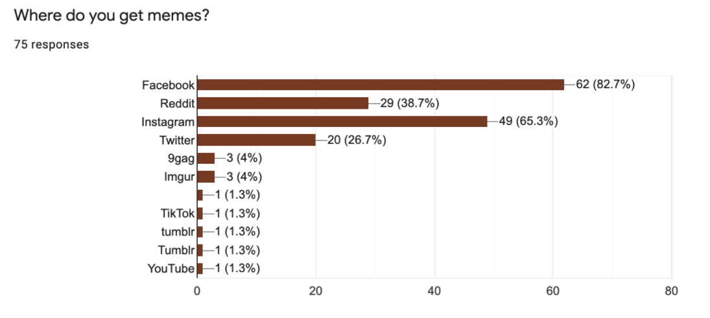
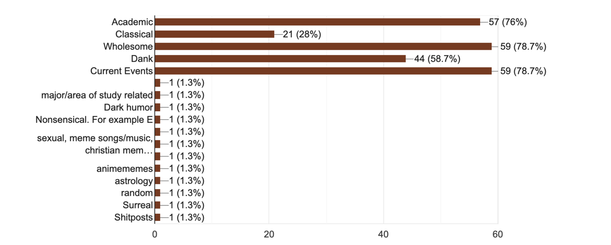
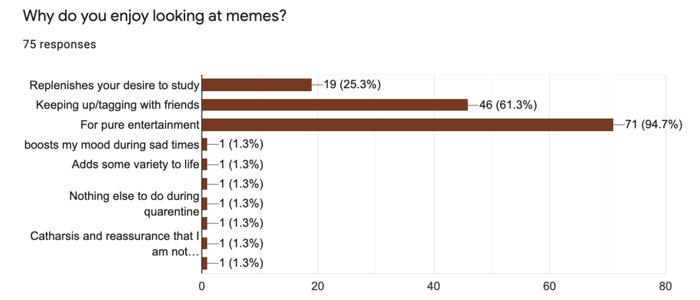
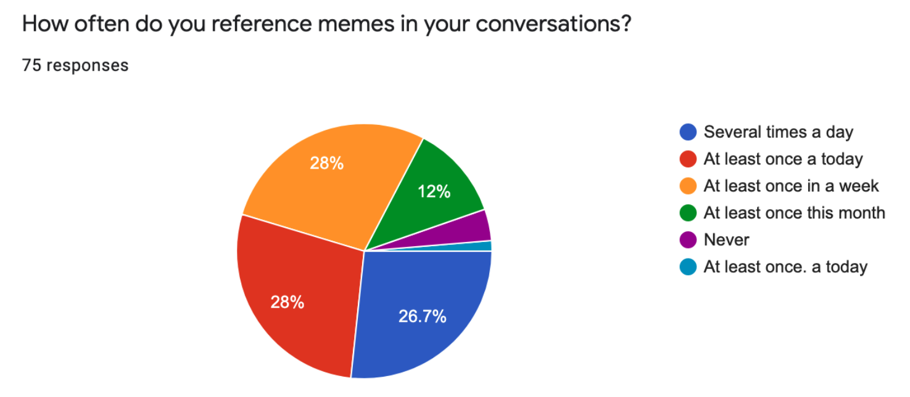
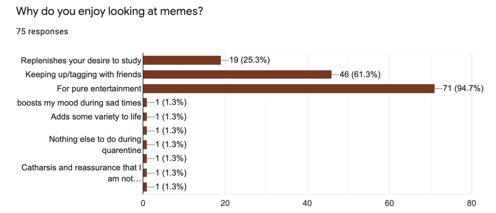
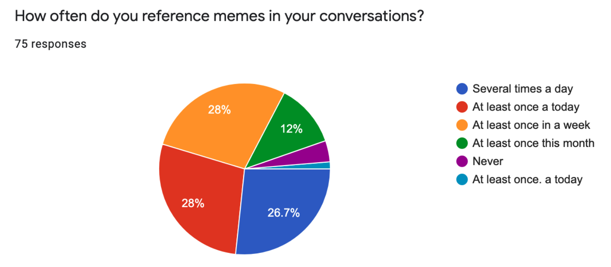

We collected 75 responses with our survey asking mostly students about their relationship with memes. The main findings were:


 



Data Analysis
From our data, we found that the main reasons why students look at memes are for pure entertainment and to keep up with friends. The most commonly used sites for users to look at memes are Facebook and Instagram, Reddit, Twitter, which are large social sites that allow easy sharing methods. We also found that students tend to enjoy memes that are mostly Wholesome, Current News, and Academic related. Over half of our sample size also claimed that they refer to memes at once a day, proving that memes are retained pretty well as a source of entertainment.